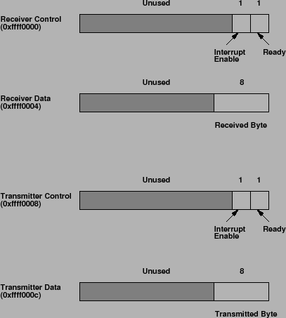

Next: About this document ... Up: SPIM S20: A MIPS Previous: Calling Convention
In addition to simulating the basic operation of the CPU and operating system, SPIM also simulates a memory-mapped terminal connected to the machine. When a program is ``running,'' SPIM connects its own terminal (or a separate console window in xspim) to the processor. The program can read characters that you type while the processor is running. Similarly, if SPIM executes instructions to write characters to the terminal, the characters will appear on SPIM's terminal or console window. One exception to this rule is control-C: it is not passed to the processor, but instead causes SPIM to stop simulating and return to command mode. When the processor stops executing (for example, because you typed control-C or because the machine hit a breakpoint), the terminal is reconnected to SPIM so you can type SPIM commands. To use memory-mapped IO, spim or xspim must be started with the -mapped_io flag.
The terminal device consists of two independent units: a receiver and a transmitter. The receiver unit reads characters from the keyboard as they are typed. The transmitter unit writes characters to the terminal's display. The two units are completely independent. This means, for example, that characters typed at the keyboard are not automatically ``echoed'' on the display. Instead, the processor must get an input character from the receiver and re-transmit it to echo it.
|  |
The processor accesses the terminal using four memory-mapped device
registers, as shown in Figure . ``Memory-mapped''
means that each register appears as a special memory location. The
Receiver Control Register is at location 0xffff0000; only two of its
bits are actually used. Bit 0 is called ``ready'': if it is one it
means that a character has arrived from the keyboard but has not yet
been read from the receiver data register. The ready bit is
read-only: attempts to write it are ignored. The ready bit changes
automatically from zero to one when a character is typed at the
keyboard, and it changes automatically from one to zero when the
character is read from the receiver data register.
Bit one of the Receiver Control Register is ``interrupt enable''.
This bit may be both read and written by the processor. The interrupt
enable is initially zero. If it is set to one by the processor, an
interrupt is requested by the terminal on level zero (bit 8 of Status
and Cause registers) whenever the
ready bit is one. For the interrupt actually to be received by the
processor, interrupts must be enabled in the status register of the
system coprocessor (see Section ).
Other bits of the Receiver Control Register are unused: they always read as zeroes and are ignored in writes.
The second terminal device register is the Receiver Data Register (at address 0xffff0004). The low-order eight bits of this register contain the last character typed on the keyboard, and all the other bits contain zeroes. This register is read-only and only changes value when a new character is typed on the keyboard. Reading the Receiver Data Register causes the ready bit in the Receiver Control Register to be reset to zero.
The third terminal device register is the Transmitter Control Register (at address 0xffff0008). Only the low-order two bits of this register are used, and they behave much like the corresponding bits of the Receiver Control Register. Bit 0 is called ``ready'' and is read-only. If it is one it means the transmitter is ready to accept a new character for output. If it is zero it means the transmitter is still busy outputting the previous character given to it. Bit one is ``interrupt enable''; it is readable and writable. If it is set to one, then an interrupt will be requested on level one (bit 9 of Status and Cause registers) whenever the ready bit is one.
The final device register is the Transmitter Data Register (at address 0xffff000c). When it is written, the low-order eight bits are taken as an ASCII character to output to the display. When the Transmitter Data Register is written, the ready bit in the Transmitter Control Register will be reset to zero. The bit will stay zero until enough time has elapsed to transmit the character to the terminal; then the ready bit will be set back to one again. The Transmitter Data Register should only be written when the ready bit of the Transmitter Control Register is one; if the transmitter isn't ready then writes to the Transmitter Data Register are ignored (the write appears to succeed but the character will not be output).
In real computers it takes time to send characters over the serial lines that connect terminals to computers. These time lags are simulated by SPIM. For example, after the transmitter starts transmitting a character, the transmitter's ready bit will become zero for a while. SPIM measures this time in instructions executed, not in real clock time. This means that the transmitter will not become ready again until the processor has executed a certain number of instructions. If you stop the machine and look at the ready bit using SPIM, it will not change. However, if you let the machine run then the bit will eventually change back to one.
Ian Moor 2009-03-11